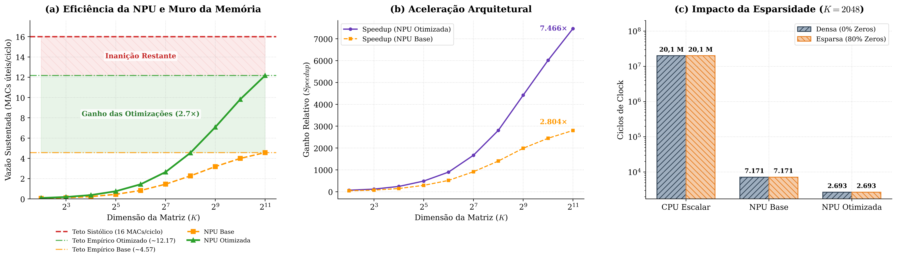

Desempenho da NPU¶
Os resultados desta página foram medidos na FPGA (Nexys A7-100T, 100 MHz), com a NPU integrada ao SoC RISC-V. Para que as métricas não dependam da tecnologia nem da frequência, elas são expressas em ciclos de clock, tendo como referência o núcleo RV32I executando o mesmo algoritmo.
O benchmark é um firmware bare-metal parametrizado: cada experimento define uma camada e os mecanismos da NPU habilitados, sobre dados pseudoaleatórios gerados na própria placa, com os ciclos medidos pelo contador do CLINT. Cada resultado da NPU é recalculado pela CPU e comparado byte a byte: não houve divergência, e o tempo da NPU foi idêntico em todas as repetições. A métrica principal é a vazão útil, em MACs úteis por ciclo. Comparam-se duas configurações:
- base: sem os mecanismos de movimentação de dados, com os pesos enviados por DMA a cada execução, um
STARTpor tile e a CPU lendo a saída; - otimizada: com todos eles (pesos residentes, sequenciador, saída por DMA, tiles encadeados e streaming), o que pressupõe o reaproveitamento dos pesos entre execuções, típico da inferência.
Metodologia¶
A CPU de referência¶
Motivação¶
A avaliação de desempenho de aceleradores dedicados, como a NPU proposta neste trabalho depende da definição de uma baseline de CPU adequada. Comparações diretas de tempo de execução ou throughput absoluto tendem a ser fortemente influenciadas por fatores externos à arquitetura - como frequência de clock, tecnologia de fabricação, compiladores otimizados e microarquiteturas proprietárias - o que dificulta a análise do ganho arquitetura proporcionado pelo acelerador.
Dessa forma, este trabalho adota como princípio metodológico a comparação em número de ciclos e em nível arquitetural, abstraindo deliberadamente a frequência de operação. O objetivo não é reproduzir fielmente o comportamento de um microcontrolador comercial específico, mas sim estabelecer limites plausíveis para uma CPU de classe de microprocessadores embarcados (embedded), contra a qual o ganho da NPU possa ser avaliado de forma justa e reprodutível.
RV32I Multiciclo¶
A CPU utilizada como baseline neste SoC (System-on-a-Chip) é uma implementação RV32I-like estritamente multiciclo, sem pipeline, sem execução fora de ordem e sem extensões opcionais (M, F, V etc.). Cada instrução é decomposta em estágios funcionais sequenciais, com latências determinadas por restrições reais de FPGA, em especial:
- Latência de memória síncrona (IF e MEM com múltiplos ciclos);
- Caminhos críticos de lógica combinacional;
- Reuso de unidades funcionais para minimizar área.
Uma configuração típica de latências por instrução é apresentada abaixo:
| Estágio | Latência (ciclos) | Observações |
|---|---|---|
| IF | 2 | Memória síncrona |
| ID | 1 | Decodificação e leitura de registradores |
| EX | 1-2 | Branches com latência adicional |
| MEM | 1-2 | Dependente da operação |
| WB | 1 | Escrita em registradores |
CPI Médio
Assim, o custo médio por instrução (CPI - Cycles per Instruction) situa-se tipicamente entre 6 e 8 ciclos, dependendo do código sendo executado pelo processador.
Essa CPU representa um ponto de referência conservador, porém realista, para sistemas embedded minimalistas, educacionais ou orientados a baixo consumo.
Comparação com MCU Comercial¶
Microcontroladores modernos baseados em RISC-V - como o ESP32-C3 - ou ARM (série M) incorporam uma série de otimizações microarquiteturais que dificultam uma comparação direta:
- Pipeline profundo (tipicamente 3 a 5 estágios);
- Execução especulativa e prefetch;
- Unidades aritméticas dedicadas e paralelas;
- Barramentos e hierarquias de memória otimizadas.
Embora essas técnicas reduzam o número médio de ciclos por instrução, elas existem principalmente para viabilizar frequências mais altas, e não necessariamente para reduzir o trabalho arquitetural intrínseco da computação.
Comparar diretamente tempos absolutos ou benchmarks compilados para tais CPUs introduziria variáveis difíceis de isolar, como qualidade do compilador, agressividade de otimizações e detalhes proprietários não documentados.
Classe de Arquiteturas Consideradas¶
O baseline proposto representa a classe de processadores com as seguintes características:
- ISA: RV32I com extensão de multiplicação (RV32IM);
- Execução escalar (1 operação aritmética por instrução);
- Sem unidades vetoriais ou SIMD;
- Sem aceleração dedicada para MACs.
Essa classe inclui tanto processadores multi-cycles simples quanto microcontroladores modernos com pipeline e multiplicador em hardware. Diferenças microarquiteturais afetam latência e frequência, mas não alteram os limites fundamentais impostos pela ISA.
Considere a computação de um único MAC escalar:
Em RV32IM, mesmo assumindo otimizações ideais, essa operação exige no mínimo:
- Um
loadpara o operandoa; - Um
loadpara o operandob; - Uma instrução de multiplicação (
mul); - Uma instrução de soma (
add).
Portanto, cada MAC requer pelo menos 4 instruções.
Assumindo-se um cenário otimista:
- CPI = 1;
- Pipeline ideal;
- Cache perfeito;
- Sem stalls.
Obtém-se o limite inferior teórico: \(\text{Ciclos}_{\text{CPU}}\ge 4\times N_{\text{MAC}}\). Esse resultado é independente de frequência, tecnologia ou microarquitetura específica.
Com base nas observações anteriores, define-se o modelo matemático do baseline de CPU como:
Onde:
- \(N_{\text{MAC}}\) = número total de operações MAC do workload;
- \(T_{\text{CPU}}^{\text{min}}\) = tempo mínimo em ciclos.
Esse modelo não representa um processador real, mas sim um limite inferior teórico para qualquer CPU RV32 escalar compatível com a ISA.
Justificativa do Uso de um Core RV32I Multiciclo¶
A implementação de um core RV32I multi-cycle no SoC proposto não busca competir em desempenho absoluto, mas sim:
- Evidenciar de forma clara os gargalos arquiteturais da execução escalar;
- Facilitar análise ciclo-a-ciclo e verificação funcional;
- Servir como plataforma educacional e experimental.
Importante ressaltar que, mesmo substituindo esse core por uma CPU pipelined ideal, o limite inferior definido permanece válido.
Limites do speedup¶
A aceleração obtida por meio de unidades especializadas, como NPUs (Neural Processing Units), é frequentemente reportada como um fator de speedup em relação à execução puramente em software. No entanto, tais valores isolados podem ser enganosos se não forem contextualizados por limites teóricos e arquiteturais bem definidos.
Este capítulo busca estabelecer:
- A natureza do workload (operações matriciais e convolucionais);
- Restrições impostas por memória, DMA e interconexão;
- Grau de paralelismo efetivamente explorável.
Dessa forma, busca-se responder à pergunta central:
Speedup
O speedup observado representa um limite estrutural da arquitetura ou um artefato da CPU baseline escolhida?
Definição Formal de Speedup¶
O speedup é definido de forma clássica como:
onde:
- \(T_{\text{CPU}}\) = tempo de execução do workload completo utilizando apenas a CPU;
- \(T_{\text{CPU+NPU}}\) = tempo de execução considerando offload da computação para a NPU.
Como a análise é feita em termos arquiteturais, o tempo é expresso em número de ciclos de clock, não em segundos, eliminando a dependência de frequência de clock.
Overhead de Offload¶
O primeiro limite fundamental é que nenhuma NPU pode ser mais rápida do que o custo de invocá-la. O tempo total com aceleração pode ser decomposto como:
Onde:
- \(T_{\text{setup}}\) = escrita de CSRs e comandos;
- \(T_{\text{DMA}}\) = transferência de dados;
- \(T_{\text{NPU}}\) = computação efetiva;
- \(T_{\text{sync}}\) = polling ou interrupção.
Isso implica que workloads pequenos ou com baixa intensidade aritmética possuem speedup próximo de 1 ou até < 1, independentemente da NPU.
Esse limite explica porque: vetores curtos; poucas iterações; ou kernels pouco densos, não se beneficiam significativamente da aceleração.
O limite superior teórico ocorre quando:
- Todo o tempo de computação da CPU é substituído por computação paralela na NPU;
- Overheads de comunicação são desprezíveis;
- A NPU opera com utilização plena.
Nesse cenário hipotético:
onde:
- \(C_{\text{CPU}}\) = ciclos necessários para executar o kernel em software;
- \(C_{\text{NPU}}\) = ciclos necessários para executar o mesmo kernel na NPU.
Para workloads típicos de inferência (MACs, convoluções, GEMMs):
onde \(P\) é o grau de paralelismo da NPU.
Assim, o speedup máximo teórico é aproximadamente: \(S_{\text{max}}\approx P\). Esse resultado é consistente com literatura clássica de arquiteturas SIMD, arranjos sistólicos e aceleradores.
Lei de Amdahl Aplicada à NPU¶
Na prática, apenas uma fração do código é acelerável. Aplicando a Lei de Amdahl:
onde:
- \(f\) = fração do tempo total originalmente gasta em computação acelerável;
- \(S_{\text{acc}}\) = speedup do trecho acelerado.
Mesmo com \(S_{\text{acc}} \rightarrow \infty\), o speedup total é limitado por \(1\ / \ (1-f)\). No contexto deste SoC:
- loops de MACs e ReLU \(\rightarrow\) alto \(f\);
- controle, configuração, I/O \(\rightarrow\) baixo \(f\).
Isso explica porque o speedup observado satura mesmo quando a NPU é escalada.
Limite Prático¶
Na implementação real de um SoC, o teto de speedup é reduzido por:
- Largura de banda da memória: a NPU só é tão rápida quanto o fornecimento de dados;
- Arbitragem do barramento: mesmo com comportamento determinístico, há ciclos não produtivos;
- Granularidade do DMA: transferências em blocos impõem latência mínima.
Esses fatores impõem um teto prático:
A observação de ciclos praticamente constantes entre execuções reforça que:
- O sistema opera em regime determinístico e previsível;
- O teto observado é estrutural, não estatístico.
O speedup máximo medido experimentalmente deve ser interpretado como: o teto de aceleração da arquitetura atual para aquele padrão de workload e hierarquia de memória. Não se trata de um limite universal - mas, sim, um ponto de equilíbrio entre paralelismo computacional, capacidade de alimentação de dados e custo de orquestração pela CPU.
Eficiência e o muro da memória¶
O experimento usa uma multiplicação de matrizes que ocupa o arranjo inteiro (quatro vetores de entrada por quatro saídas), variando a dimensão \(K\) até 2.048, o limite da memória local da NPU.
| \(K\) | CPU (ciclos) | NPU base | NPU otim. | MACs/ciclo base | MACs/ciclo otim. | Speedup otim. |
|---|---|---|---|---|---|---|
| 16 | 154.376 | 1.093 | 665 | 0,23 | 0,38 | 232× |
| 64 | 630.573 | 1.208 | 697 | 0,85 | 1,47 | 905× |
| 256 | 2.534.236 | 1.779 | 889 | 2,30 | 4,61 | 2.851× |
| 1.024 | 10.085.548 | 4.080 | 1.657 | 4,02 | 9,89 | 6.087× |
| 2.048 | 20.047.014 | 7.148 | 2.681 | 4,58 | 12,22 | 7.477× |

(a) O muro da memória. Na configuração base, a cada passo de \(K\) a NPU aguarda uma palavra de pesos e uma de ativações antes de calcular (cerca de três ciclos por passo), o que limita a vazão a \(16/3\approx5{,}3\) MACs por ciclo: ela estabiliza em 4,6, com o arranjo ocioso cerca de 71% do tempo. Na configuração otimizada, os pesos residentes eliminam o tráfego de parâmetros e o streaming sobrepõe a chegada das ativações ao cálculo, de modo que cada passo custa cerca de um ciclo: a vazão atinge 12,22 MACs por ciclo em \(K=2048\) (76% de utilização) e tende ao teto sistólico.
Resta um custo fixo de cerca de 670 ciclos por execução, devido ao overhead de configuração da NPU, de movimentação de dados e de esvaziamento do arranjo. Em matrizes pequenas, esse custo domina: até \(K=32\), a configuração otimizada leva os mesmos 665 ciclos.
(b) Aceleração. O speedup cresce com \(K\) à medida que o custo fixo se dilui, chega a 7.477× em \(K=2048\) e tende a um platô determinado pela razão entre os custos por operação da CPU e da NPU. As curvas ainda sobem no maior \(K\) medido, porque \(K\) está limitado pela capacidade da memória local, e não pela saturação.
(c) Esparsidade. Na CPU, sem multiplicador em hardware, cada produto é uma rotina de software que soma e desloca bit a bit e termina quando o fator se anula: com 80% de ativações nulas, a execução cai de 20,0 para 5,6 milhões de ciclos. Na NPU, as multiplicações por zero são calculadas integralmente pelos PEs, e a contagem de ciclos não muda: o tempo é determinístico, mas a esparsidade não é aproveitada.
Rede completa¶
Na CNN do estudo de caso, o custo fixo é pago uma única vez por imagem, e não a cada passagem. Executada na placa, a NPU calcula a rede inteira, da chegada do programa de descritores à gravação dos logits, em 1.506 ciclos (15 µs a 100 MHz), ou 8,5 MACs úteis por ciclo. Sem os mecanismos, com a CPU montando as janelas e controlando cada passagem, a mesma rede levava 226.417 ciclos.
| Configuração da CNN | Ciclos por imagem | MACs úteis/ciclo |
|---|---|---|
| CPU fazendo o im2col e o controle, sem os mecanismos | 226.417 | 0,06 |
| Todos os mecanismos | 1.506 | 8,5 |
Outros números da integração no SoC:
- Em convoluções com kernels maiores, a vazão chega a 14,4 MACs por ciclo.
- A transferência de dados por DMA é 14,7× mais rápida que por escritas da CPU (PIO).
- O SoC completo ocupa 107,5 dos 135 blocos BRAM36 da Artix-7 e cerca de 11 mil LUTs, com o timing fechado a 100 MHz.
O gargalo passa a ser o sistema
Com o cálculo em 15 µs, a latência percebida de uma inferência pela UART (cerca de 9 ms) é dominada pela comunicação serial: o cálculo é menos de 0,2% do tempo total. Pela Lei de Amdahl, nem uma NPU infinitamente rápida reduziria essa latência em mais de 0,2%; o próximo ganho depende de um enlace mais rápido com o hospedeiro. Ver Estudo de caso.
Referências¶
- AMDAHL, Gene M. Validity of the single processor approach to achieving large scale computing capabilities. In: Proceedings of the April 18-20, 1967, spring joint computer conference. 1967. p. 483-485.
- Espressif Documentation. Disponível em: https://documentation.espressif.com/esp32-c3_datasheet_en.pdf.
- HENNESSY, John L.; PATTERSON, David A. Computer architecture: a quantitative approach. Elsevier, 2011.
- PATTERSON, David A.; HENNESSY, John L. Computer organization and Design. The Hardware/Soft, 2022.
- HARRIS, Sarah; HARRIS, David. Digital Design and Computer Architecture, RISC-V Edition. Morgan Kaufmann, 2021.